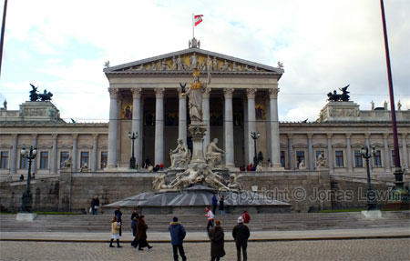
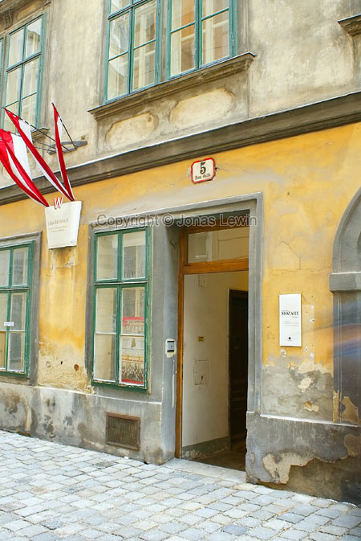

My
trip started at the castle of Schönbrunn. I imagined castles to look quite
different than this one.
My
trip started at the castle of Schönbrunn. I imagined castles to look quite
different than this one.So I decided to try to take some different types of photos on the birds.
 The
black thing behind this bird is actually snow. White snow. You wouldn't have
thought that, now would you?
The
black thing behind this bird is actually snow. White snow. You wouldn't have
thought that, now would you? The
Christmas market at Schönbrunn. Reminds me of how my home village when I was
very young.
The
Christmas market at Schönbrunn. Reminds me of how my home village when I was
very young.The weather was very different from day to day. But these trees looks great when the fog is freezing, and sticking to the branches.
To me, this is very typical houses on the hills of Austria. This is just outside Vienna.
At Stift Melk you can see these wonderful paintings in the roof, and on may outside walls. I can only imagine of how it looks inside.
Looking at Stift Melk, and it's gardens. Makes a very nice photo, but this is too small to look great.
One of the "roller coasters" in the Prater. In the background you see the Riesenrad Ferris wheel.
Looks very similar to the one we have in Sweden. And from this angle it looks like a big smile.
When I was there, it was closed. Very likely because it was way to cold to enjoy a ride in it.
Stephansdom says.... welcome?
At least the inside looks more appealing than the outside.
Underneath the Stephansdom church, you find the Catacombs. And these photos here are from the nicer parts of the Catacombs.
For some strange reasons, they keep parts of saints in these jars/boxes. Why would you like to store parts of really old humans, in jars underneath a church?
Tourist attraction?
The Parliament.
This is where Mozart lived in Vienna. Very nice that they still keep his apartment.
Just a funny picture. The name of the store is: "The kiosk". Plain and simple.
I really wonder why this statue is there, and what it represents.
A typical street in Vienna with many apartments. This is from the 1st district (i.e. the city center)
 A
more typical shopping street.
A
more typical shopping street.